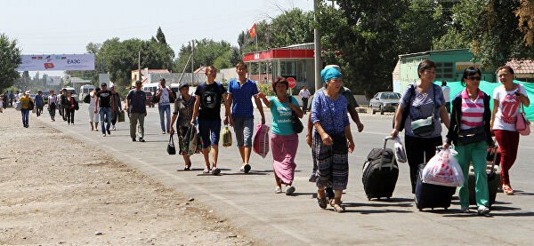

Общество 14:00,31 января Бишкек 24.kg Анастасия БЕНГАРД
В Кыргызстане число безработных, вставших на учет, выросло. Состояние мировых рынков труда по-прежнему во многом определяется пандемией. И ожидать их быстрого и уверенного восстановления не приходится.
И. о. начальника управления труда и содействия занятости Минтруда, соцобеспечения и миграции Талант Шаршеев рассказал 24.kg о мерах поддержки безработных, изменениях на рынке труда и том, почему люди не соглашаются на предложенные вакансии.
 — По данным на 1 января 2022 года, уровень общей безработицы в Кыргызстане составил 5,8 процента, уровень официальной безработицы — 2,9 процента. В службах занятости состоят на учете 99,3 тысячи человек, из них статус безработного имеют 75,9 тысячи. Вставать на учет не обязательно, поэтому эти цифры не отражают истинную картину.
— Каков размер пособия по безработице?
— Базовое пособие — 300 сомов в месяц. Но оно зависит от страховых отчислений. Если безработный делал отчисления в Соцфонд непрерывно 10 лет, то он имеет право на пособие в размере 600 сомов.
— Даже не представляю, как можно прожить на такую сумму целый месяц.
— Конечно, у нас есть в планах увеличение пособия. Но это пассивные меры поддержки. Мы больше уделяем внимания активным мерам. Это переобучение, повышение квалификации, приглашение на оплачиваемые общественные работы. Всего активными мерами в 2021 году охватили почти 23 тысячи человек, а трудоустроили 15,5 тысячи.
— Есть средний портрет безработного?
— В большинстве случаев это люди с высшим образованием, которые работали, имеют понимание о трудоустройстве, поэтому и обращаются к нам. Другие категории граждан к нам обращаются редко. Почему люди не встают на учет? Возможно, это связано с тем, что мы не можем им предоставить те виды труда, на которые они рассчитывают. Люди хотят высокооплачиваемую работу, по своей специальности, потому что трудно взять и переквалифицироваться. Многие считают, что 50 лет — предельный возраст для смены работы. Но даже в 50 лет можно переобучиться, надо отходить от стереотипов!
Вакансий очень много. Но система оплаты — вот что мешает массовому обеспечению рабочими местами. Не хочет человек получать 10 тысяч сомов, а работодатель не может предложить больше.
— Высококвалифицированный человек не пойдет работать и за 20 тысяч сомов. А за общественные работы сколько платят? 5 тысяч сомов на посадке цветов?
— Да, примерно так. Благоустройство, ирригационные работы, много и других направлений.
— Как повлияла пандемия на рынок труда?
— Негативно, это однозначно. Количество зарегистрированных безработных выросло, плюс наблюдался приток трудовых мигрантов из других стран. К примеру, только в 2020-м в республику вернулось более 60 тысяч граждан. Предприятия понесли убытки. В результате на внутреннем рынке сократились вакансии.
Количество оставшихся без работы назвать не можем, поскольку не мониторим частный сектор, отвечаем только за тех, кто официально к нам обратился. Но и это, повторю, не отражает реальной картины.
Цикличность эпидситуации влияет на восстановление рынка. Допустим, на предприятии работает 10 человек, если двое-трое из них заболели, то процесс полностью останавливается, поскольку заменить некем, а пригласить новых нет возможности.